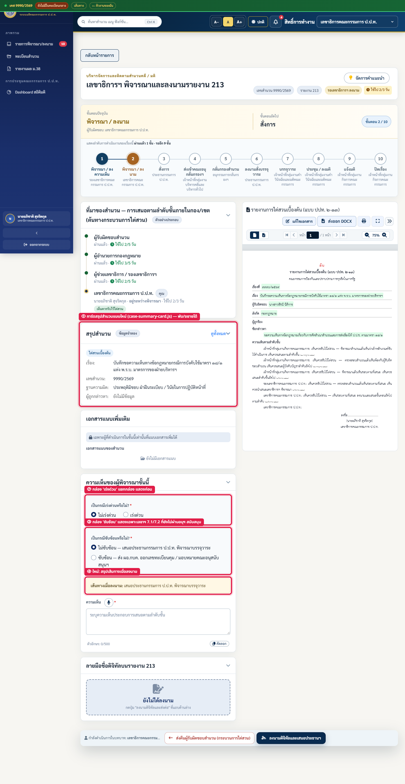
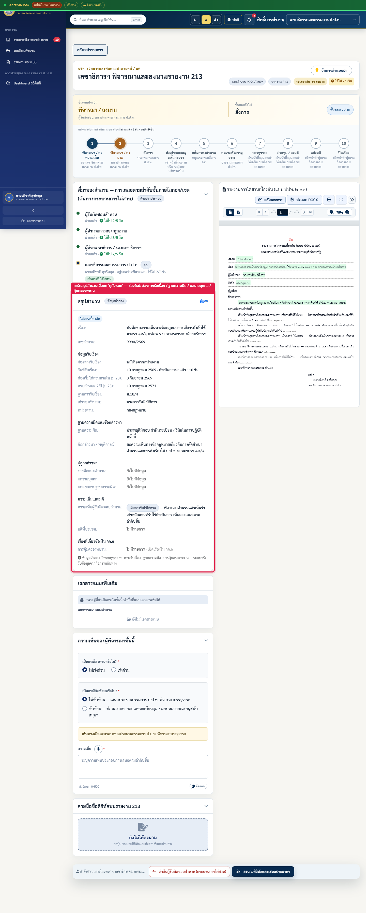
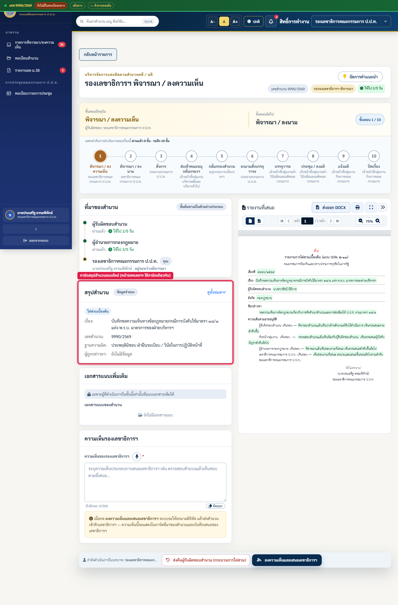
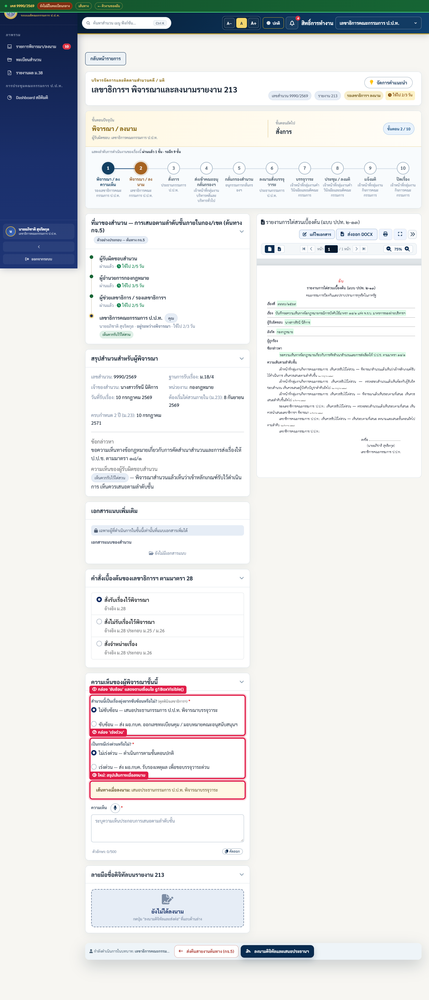
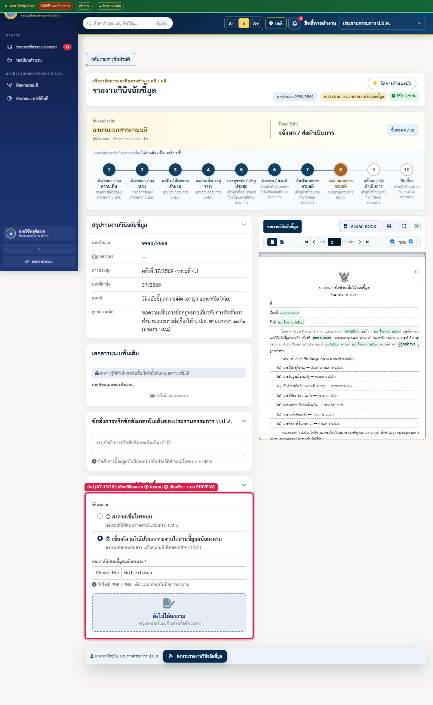
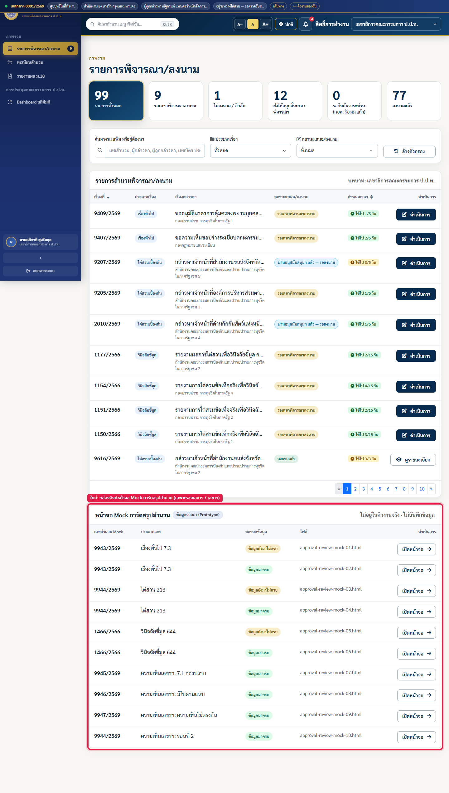
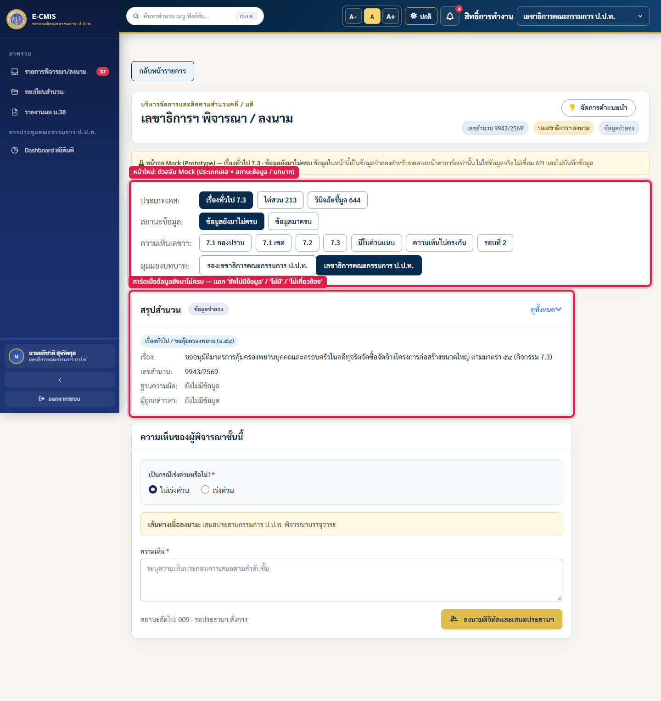
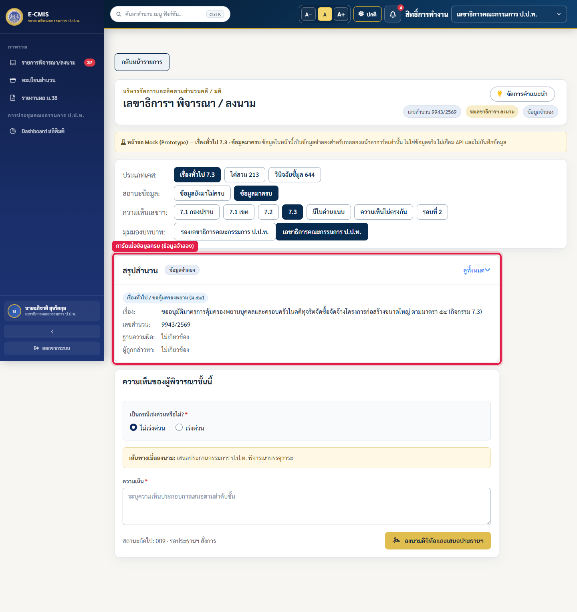
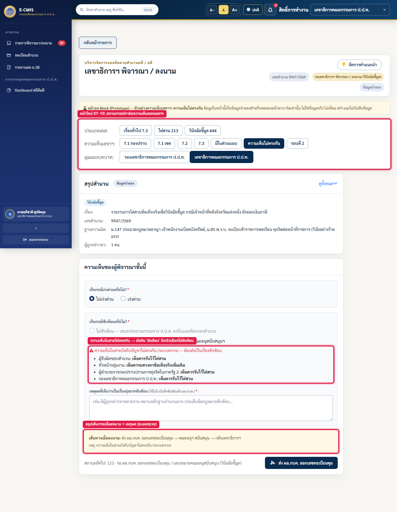

01 · หน้าพิจารณาและลงนาม — เลขาธิการฯ
- ① การ์ด "สรุปสำนวน" แบบใหม่ ย้ายไปไฟล์กลาง
case-summary-card.jsแสดงแบบย่อก่อน กด "ดูทั้งหมด" เพื่อขยาย - ② กล่อง "เป็นกรณีเร่งด่วนหรือไม่?" แยกเป็นกล่องของตัวเองและอยู่ก่อนกล่องซับซ้อน
- ③ กล่อง "เป็นกรณีซับซ้อนหรือไม่?" แสดงเฉพาะเลขาฯ สาย 7.1/7.2 ที่ยังไม่ผ่านคณะอนุฯ สนับสนุน
- ④ ใหม่: "เส้นทางเมื่อลงนาม" บอกว่าลงนามแล้วเรื่องจะไปที่ใด ป้ายปุ่มลงนามเปลี่ยนตามเส้นทาง
- การ์ดคำสั่ง ม.28 ถูกซ่อนในหน้าเลขาฯ ระบบถือว่ารับไว้พิจารณาอัตโนมัติ (A7-10)

02 · การ์ดสรุปสำนวนเมื่อกด "ดูทั้งหมด"
- ช่องใหม่ (A7-01 – A7-07): ช่องทางรับเรื่อง, วันที่รับเรื่องพร้อมจำนวนวันที่ดำเนินการมาแล้ว, ฐานความผิด, ผลรายบุคคล, การคุ้มครองพยาน
- ช่องว่างแยกความหมาย 3 แบบ: ยังไม่มีข้อมูล / ไม่มีรายการ / ไม่เกี่ยวข้อง
- ช่องที่ฐานข้อมูลยังไม่มี เติมด้วยค่าตัวอย่างและติดป้าย "ข้อมูลจำลอง" ไม่แก้ข้อมูลเคสที่บันทึกจริง

03 · หน้าพิจารณา — รองเลขาธิการฯ
- ใช้การ์ดสรุปสำนวนตัวเดียวกับหน้าเลขาฯ แต่ไม่มีกล่องเร่งด่วน/ซับซ้อน

04 · หน้าพิจารณารายงานชี้มูล — เลขาธิการฯ
- ① กล่องซับซ้อนแสดงตามเงื่อนไข
g1BoxVisible()(เดิมแสดงทุกเคส รวม 7.3 และรอบหลังคณะอนุฯ สนับสนุน) - ② กล่องเร่งด่วน · เคสที่มีใบด่วนแนบมาจะแสดงป้ายแทนกล่องเลือก
- ③ ใหม่: สรุปเส้นทางเมื่อลงนาม ใช้ตรรกะเดียวกับตอนบันทึก

05 · รายงานวินิจฉัยชี้มูล — ประธานกรรมการ ป.ป.ท.
- ใหม่ (A7-15/16): เลือกวิธีลงนาม ① ลงลายเซ็นในระบบ หรือ ② เซ็นจริงแล้วอัปโหลดฉบับลงนาม
- ค่าเริ่มต้นเป็นแบบ ② · ต้องแนบไฟล์ PDF หรือ PNG ก่อนบันทึก ไฟล์เข้าเอกสารแนบของสำนวน

06 · รายการพิจารณา/ลงนาม — เลขาธิการฯ
- ใหม่: กล่อง "หน้าจอ Mock การ์ดสรุปสำนวน" ลิงก์ไปหน้า Mock 01–10 แสดงเฉพาะรองเลขาฯ และเลขาฯ
- อยู่แยกจากตารางคิวงานจริง ไม่นับใน KPI

07 · หน้า Mock 01 — เรื่องทั่วไป 7.3 · ข้อมูลยังมาไม่ครบ
- ตัวสลับด้านบนเลือกประเภทเคส (7.3 / 213 / 644) สถานะข้อมูล และมุมมองบทบาท
- เห็นการ์ดเมื่อข้อมูลยังไม่ครบ ช่องว่างแสดง "ยังไม่มีข้อมูล" แทนการสรุปว่าไม่มี

08 · หน้า Mock 02 — เรื่องทั่วไป 7.3 · ข้อมูลครบ
- เคสเดียวกับ Mock 01 แต่เติมข้อมูลจำลองครบทุกช่อง ใช้เทียบกับภาพ 07

09 · หน้า Mock 09 — ความเห็นในสายบังคับบัญชาไม่ตรงกัน
- หน้า Mock 07–10 แสดงการ์ดความเห็นของเลขาฯ 4 สถานการณ์: 7.1 กองปราบ, มีใบด่วนแนบ, ความเห็นไม่ตรงกัน, รอบที่ 2
- เมื่อความเห็นไม่ตรงกัน ระบบบังคับเลือก "ซับซ้อน" และปิดตัวเลือก "ไม่ซับซ้อน"
- สรุปเส้นทางเมื่อลงนามแสดงเหตุผลจากระบบตรวจ
